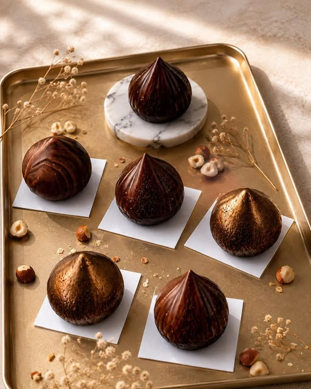
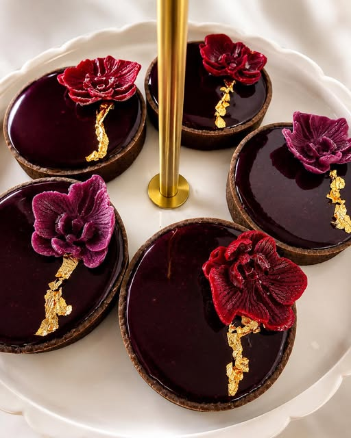
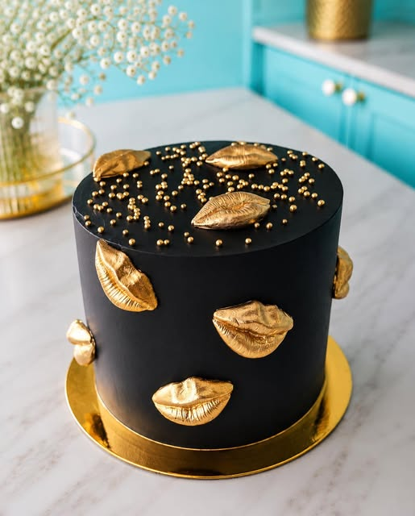
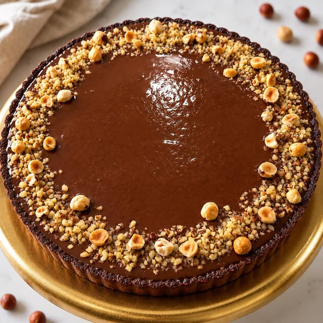
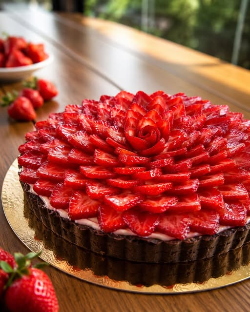
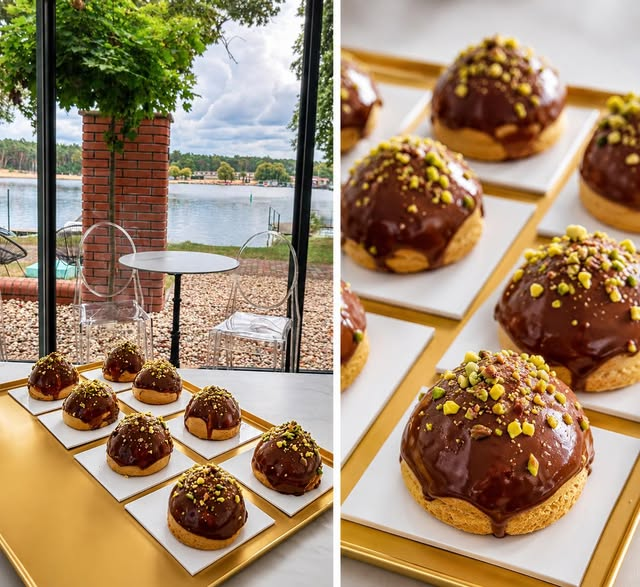

01
Torty
Na urodziny, ślub i każdą okazję, która zasługuje na wyjątkową oprawę.
Pracownia cukiernicza · Konin i okolice
Torty, monoporcje i słodkie stoły, które smakują tak dobrze, jak wyglądają.

Poznaj Słodką Panią
Każdy wypiek powstaje na indywidualne zamówienie — z wyczuciem smaku, dbałością o detal i odrobiną cukierniczej odwagi.
Oferta
Na urodziny, ślub i każdą okazję, która zasługuje na wyjątkową oprawę.

02Spójna kompozycja deserów dopasowana do charakteru i kolorystyki wydarzenia.
Małe formy, dopracowane smaki i efektowna prezentacja w każdym detalu.
Smak spotyka formę
Tworzymy małe celebracje — dokładnie takie, jakie sobie wymarzysz. Opowiedz nam o okazji, a my zajmiemy się słodką stroną wydarzenia.
Porozmawiajmy ↗Ostatnie realizacje




Zdjęcia pochodzą z profilu @slodkapani.konin.
Zamówienia